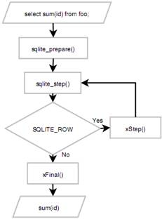

第7章 扩充C API
本章介绍SQLite的新技巧。前一章涉及一般的数据库操作，本章将开始创新。扩充API提供3种基本方法来扩展(或说定制)SQLite，包括：创建用户自定义函数、聚合和排序序列。
用户自定义函数是编写用于特定应用的SQL函数。一旦注册，就可以在SQL中被调用。
本章将涉及所有这3个用户定义的扩展工具及与之相关的API函数。你会看到，当与其它工具，如触发器和冲突解决等结合在一起时，用户定义的扩充API是强有力的，并能为SQLite创造非凡特色。
空注：本章内容对编程还是很有用的，但我对这部分内容只是略做浏览。关心这部分内容的兄弟还是得自己看原文。
API
用户自定义聚合、函数和排序法的生命同期是基于连接的。它们不存储在数据库中。有时你可能会把它们当成存储过程看待，而忘记了它们是在数据库之外的。它们存在于程序库(librarie)中，其生命周期严格地限制在你的程序之内。I
注册函数
步进函数
自定义函数和聚合的步进函数是一样的，可如下定义：
void fn(sqlite3_context* ctx, int nargs, sqlite3_value** values)
返回值
函数
返回值
一个完整的例子
Listing 7-2. The main Function
int main(int argc, char **argv)
{
int rc;
sqlite3 *db;
const char* sql;
sqlite3_open("test.db", &db);
sqlite3_create_function( db, "function", -1, SQLITE_UTF8, NULL,
function, NULL, NULL);
/* Turn on SQL logging */
//log_sql(db, 1);
/* Call function with one text argument. */
execute(db, "select function(1)");
/* Call function with several arguments of various types. */
execute(db, "select function(1, 2.71828)");
/* Call function with variable arguments, the first argument’s value
** being 'fail'. This will trigger the function to call
** sqlite3_result_error(). */
execute(db, "select function('fail', 1, 2.71828, 'three', X'0004', NULL)");
/* Done */
sqlite3_close(db);
return 0;
}
Listing 7-3. A Vanilla User-Defined Function
void function(sqlite3_context* ctx, int nargs, sqlite3_value** values)
{
int i; const char *msg;
fprintf(stdout, "function() : Called with %i arguments\n", nargs);
for(i=0; i < nargs; i++) {
fprintf( stdout, " arg %i: value=%-7s type=%i\n", i,
sqlite3_value_text(values[i]),
sqlite3_value_type(values[i]));
}
if(strcmp((const char *)sqlite3_value_text(values[0]), "fail") == 0) {
msg = "function() : Failing because you told me to.";
sqlite3_result_error(ctx, msg, strlen(msg));
fprintf(stdout, "\n");
return;
}
fprintf(stdout, "\n");
sqlite3_result_int(ctx, 0);
}
一个实际的应用程序
聚合

Figure 7-1. Query processing with aggregates
一个实际的例子
Listing 7-9. The sum_int() Test Program
int main(int argc, char **argv)
{
int rc;
sqlite3 *db;
char *sql;
rc = sqlite3_open("test.db", &db);
if(rc) {
print_error(db, "Can't open database");
exit(1);
}
/* Create aggregate table, add records. */
setup(db);
/* Register aggregate. */
fprintf(stdout, "Registering aggregate sum_int()\n");
log_sql(db, 1);
sqlite3_create_function( db, "sum_int", 1, SQLITE_UTF8, db,
NULL, step, finalize);
/* Test it. */
fprintf(stdout, "\nRunning query: \n");
sql = "select sum_int(id) from aggregate";
print_sql_result(db, sql);
/* Done. */
sqlite3_close(db);
return 0;
}
步进函数
The step() function is shown in Listing 7-10.
Listing 7-10. The sum_int() Step Function
void step(sqlite3_context* ctx, int ncols, sqlite3_value** values)
{
sum* s;
int x;
s = (sum*)sqlite3_aggregate_context(ctx, sizeof(sum));
if(sqlite3_aggregate_count(ctx) == 1) {
s->x = 0;
}
x = sqlite3_value_int(values[0]);;
s->x += x;
fprintf(stdout, "step() : value=%i, total=%i\n", x, s->x);
}
The value sum is a struct that is specific to this example and is defined as follows:
typedef struct {
int x;
} sum;
聚合的Context
Finalize函数
Listing 7-11. The sum_int() Finalize Function
void finalize(sqlite3_context* ctx)
{
sum* s;
s = (sum*)sqlite3_aggregate_context(ctx, sizeof(sum));
sqlite3_result_int(ctx, s->x);
fprintf(stdout, "finalize() : total=%i\n\n", s->x);
}
排序法
排序法定义
排序法如何工作
标准的排序法类型
一个简单的例子
Compare函数
Listing 7-12. The Political Collation Function
int political_collation( void* data, int l1, const void* s1,
int l2, const void* s2 )
{
int value, opinion; struct tm* t; time_t rt;
/* Get the unpolitical value */
value = strcmp(s1,s2);
/* Get the date and time */
time(&rt);
t = localtime(&rt);
/* Form an opinion */
switch(t->tm_wday) {
case 0: /* Monday yes */
opinion = value;
break;
case 1: /* Tueday no */
opinion = -value;
break;
case 2: /* Wednesday bigger is better */
opinion = l1 >= l2 ? -1:1;
break;
case 3: /* Thursday strongly no */
opinion = -100;
break;
case 4: /* Friday strongly yes */
opinion = 100;
break;
case 5: /* Saturday golf, everything's the same */
opinion = 0;
break;
default: /* Sunday - Meet the Press, opinion changes
by the hour */
opinion = 2*(int)sin(t->tm_hour*180);
}
/* Now change it on a whim */
opinion = rand()-(RAND_MAX/2) > 0 ? -1:1;
return opinion;
}
测试程序
Listing 7-13. The Political Collation Test Program
int main(int argc, char **argv)
{
int rc;
sqlite3 *db;
char *sql;
/* For forming more consistent political opinions. */
srand((unsigned)time(NULL));
rc = sqlite3_open("test.db", &db);
if(rc) {
print_error(db, "Can't open database");
exit(1);
}
/* Create issues table, add records. */
setup(db);
/* Register collating sequence. */
fprintf(stdout, "1. Register political collating sequence\n\n");
sqlite3_create_collation( db, "POLITICAL",
SQLITE_UTF8, db,
political_collation );
/* Turn SQL logging on. */
log_sql(db, 1);
/* Test default collation. */
fprintf(stdout, "2. Select records using default collation.\n");
sql = "select * from issues order by issue";
print_sql_result(db, sql);
/* Test Oracle collation. */
fprintf(stdout, "\nSelect records using political collation. \n");
sql = "select * from issues order by issue collate POLITICAL";
print_sql_result(db, sql);
/* Done. */
sqlite3_close(db);
return 0;
}
按需排序(Collation on Demand)
Listing 7-14. Collation Registration Function
void crf( void* data, sqlite3* db,
int eTextRep, const char* cname)
{
if(strcmp(collation_name, "POLITICAL") == 0) {
/* Political collation has not been registered and is now needed */
sqlite3_create_collation( db, "POLITICAL",
SQLITE_UTF8, db,
political_collation );
} else {
/* Punt: Use some default comparison function this collation. */
sqlite3_create_collation( db, collation_name,
SQLITE_UTF8, db,
default_collation );
}
}
一个实际的应用程序
比较函数
Listing 7-15. Oracle Date Collation Function
int oracle_date_collation( void* data,
int len1, const void* arg1,
int len2, const void* arg2 )
{
int len;
date d1;
date d2;
char zDate1[25];
char zDate2[25];
/* Copy date 1 */
if(len1 > 24) {
len = 24;
} else {
len = len1;
}
strncpy(&zDate1[0], arg1, len);
zDate1[len] = '\0';
/* Copy date 2 */
if(len2 > 24) {
len = 24;
} else {
len = len2;
}
strncpy(&zDate2[0], arg2, len);
zDate2[len] = '\0';
/* Convert dates to date struct */
oracle_date_str_to_struct(zDate1, &d1);
oracle_date_str_to_struct(zDate2, &d2);
fprintf(stdout, "collate_fn() : date1=%s, date2=%s\n", zDate1, zDate2);
/* Compare structs */
if(d1.year < d2.year)
{
return -1;
}
else if(d1.year > d2.year)
{
return 1;
}
/* If this far, years are equal. */
if(d1.month < d2.month)
{
return -1;
}
else if(d1.month > d2.month)
{
return 1;
}
/* If this far, months are equal. */
if(d1.day < d2.day)
{
return -1;
}
else if(d1.day > d2.day)
{
return 1;
}
/* If this far, dates are equal. */
return 0;
}
日期解析
Listing 7-16. The Oracle Date Parsing Function
int oracle_date_str_to_struct(const char* value, date* d)
{
const char* date, *tmp;
char *start, *end, zDay[3], zMonth[4], zYear[3];
date = get_date(value);
if(date == NULL) {
fprintf(stderr, "Invalid date\n");
return -1;
}
/* Find first '-' */
start = strchr(date,'-');
/* Find last '-' */
end = strchr(start+1,'-');
/* Extract day part, convert to int*/
strncpy(zDay, date,2);
zDay[2] = '\0';
d->day = atoi(zDay);
/* Extract month part, convert to int*/
strncpy(zMonth, start+1,3);
zMonth[3] = 0;
tmp = uppercase(zMonth);
d->month = month_num(tmp);
free((void*)tmp);
/* Extract year part, convert to int*/
strncpy(zYear, end+1,2);
zYear[2] = '\0';
d->year = atoi(zYear);
free((void*)date);
return 0;
}
Listing 7-17. The get_date() Function
#define ORACLE_DATE_REGEX "[0-9]{1,2}-[a-zA-Z]{3,3}-[0-9]{2,2}";
const char* get_date(const char* value)
{
pcre *re;
const char *error, *pattern;
int erroffset;
int ovector[3];
int value_length;
int rc, substring_length;
char* result, *substring_start;
pattern = ORACLE_DATE_REGEX;
re = pcre_compile(
pattern, /* the pattern */
0, /* default options */
&error, /* for error message */
&erroffset, /* for error offset */
NULL); /* use default character tables */
/* Compilation failed */
if (re == NULL) {
return NULL;
}
value_length = (int)strlen(value);
rc = pcre_exec(
re, /* the compiled pattern */
NULL, /* no extra data - we didn't study the pattern */
value, /* the value string */
value_length, /* the length of the value */
0, /* start at offset 0 in the value */
0, /* default options */
ovector, /* output vector for substring information */
3); /* number of elements in the output vector */
if (rc < 0) {
/* Match error */
return NULL;
}
/* Match succeded */
substring_start = (char*)value + ovector[0];
substring_length = ovector[1] - ovector[0];
//printf("%.*s\n", substring_length, substring_start);
result = malloc(substring_length+1);
strncpy(result, substring_start, substring_length);
result[substring_length] = '\0';
return result;
}
测试程序
All three of the above functions work together to collate Oracle dates in chronological order. Our example program is shown in Listing 7-18.
Listing 7-18. The Oracle Collation Test Program
int main(int argc, char **argv)
{
int rc;
sqlite3 *db;
char *sql;
rc = sqlite3_open("test.db", &db);
if(rc) {
print_error(db, "Can't open database");
exit(1);
}
/* Install oracle related date functions. */
install_date_functions(db);
/* Register collating sequence. */
fprintf(stdout, "Registering collation sequence oracle_date\n");
sqlite3_create_collation( db, "oracle_date",
SQLITE_UTF8, db,
oracle_date_collation );
/* Create dates table, add records. */
setup(db);
/* Install date */
install_date_triggers(db);
/* Turn SQL logging on. */
log_sql(db, 1);
/* Test default collation. */
fprintf(stdout, "Select records. Use default collation.\n");
sql = "select * from dates order by date";
print_sql_result(db, sql);
/* Test Oracle collation. */
fprintf(stdout, "\nSelect records. Use Oracle data collation. \n");
sql = "select * from dates order by date collate oracle_date";
print_sql_result(db, sql);
/* Get ISO Date from Oracle date. */
fprintf(stdout, "\nConvert Oracle date to ISO format.\n");
sql = "select iso_from_oradate('01-APR-05') as 'ISO Date'";
print_sql_result(db, sql);
/* Validate Oracle date. */
fprintf(stdout, "\nValidate Oracle format. Should fail.\n");
sql = "select validate_oradate('01-NOT-2005')";
execute(db, sql);
/* Test Oracle date triggers. */
fprintf(stdout, "\nTest Oracle insert trigger -- should fail.\n");
sql = "insert into dates (date) values ('01-NOT-2005')";
execute(db, sql);
fprintf(stdout, "\nTest Oracle update trigger -- should succeed.\n");
sql = "update dates set date='01-JAN-2005'";
execute(db, sql);
print_sql_result(db, "select * from dates");
/* Done. */
sqlite3_close(db);
return 0;
}
运行结果
略。